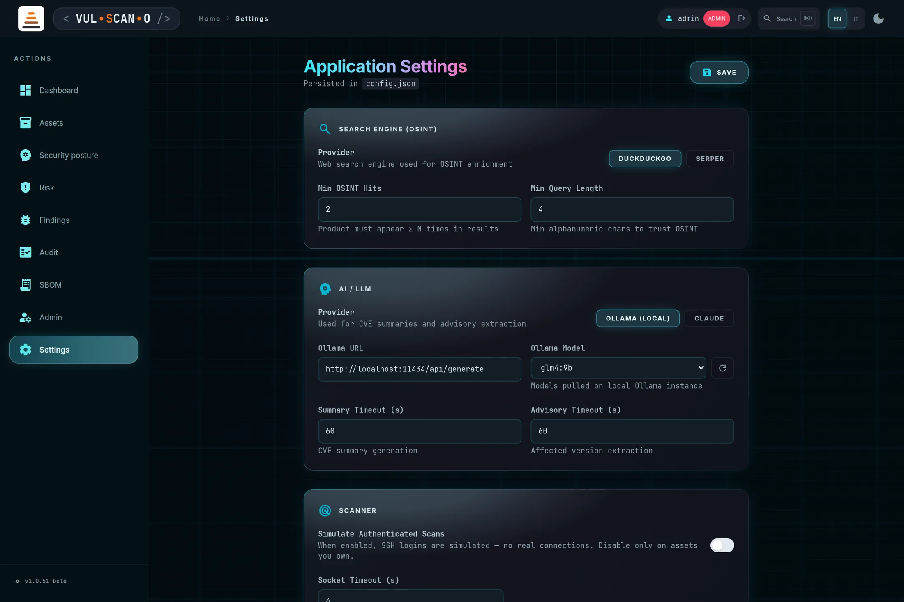
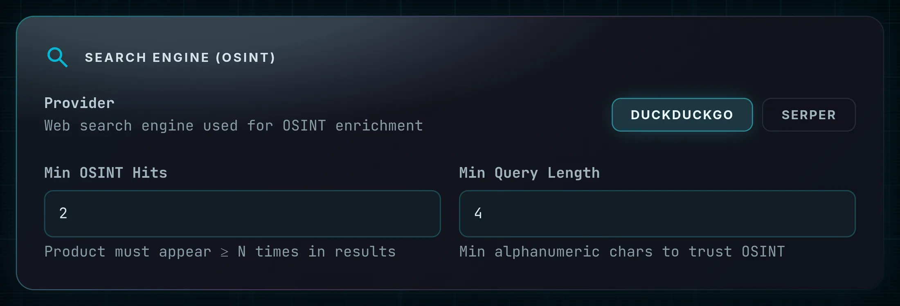
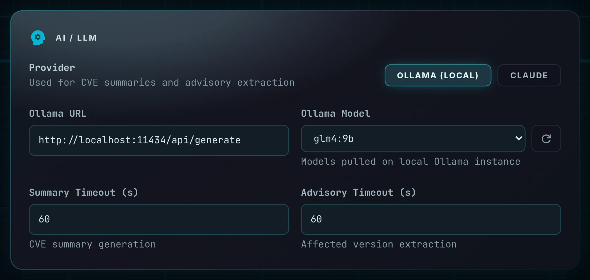
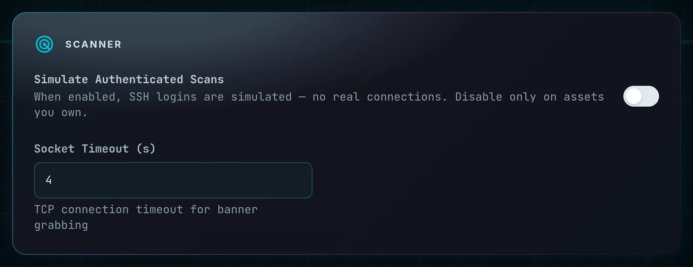
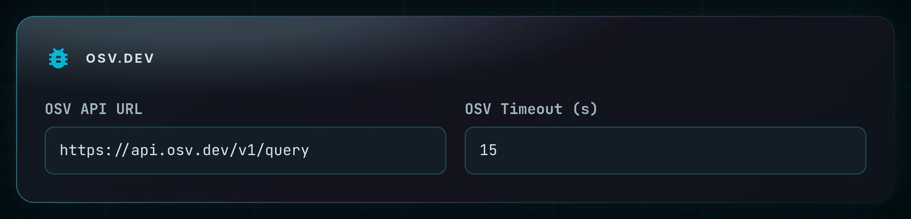
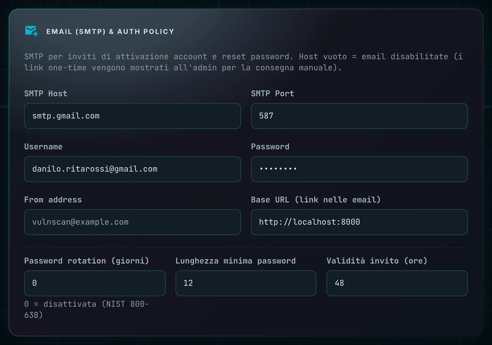
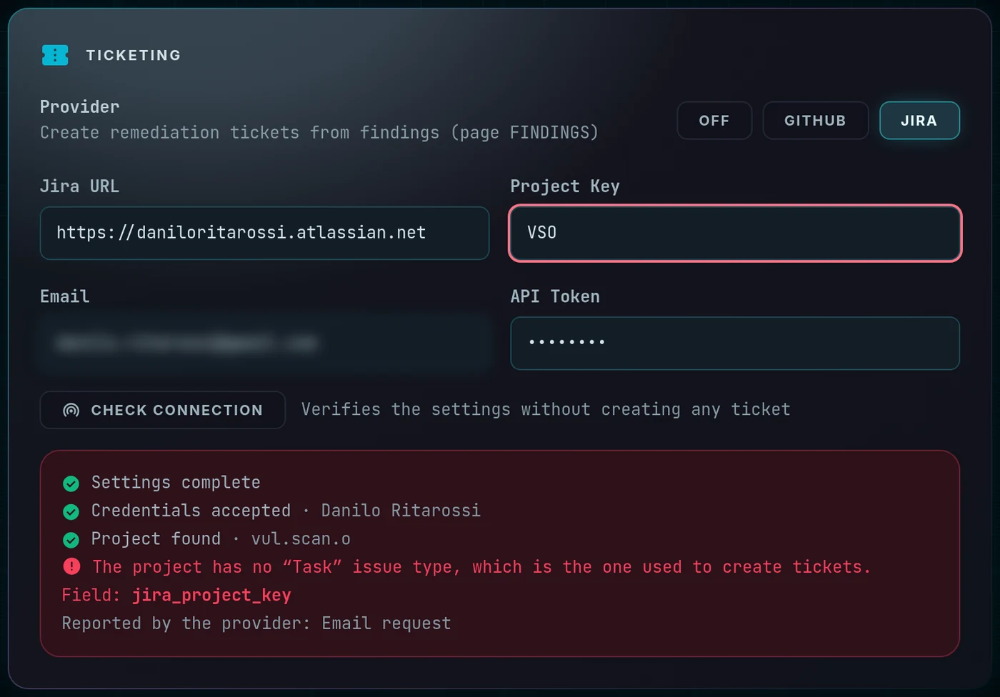

Application SettingsImpostazioni dell'applicazione
Everything in config.json, editable from the browser: which model interprets advisories, which
search engine backs OSINT, whether SSH logins are simulated or real, where CVE data comes from, how email and
password policy behave, and which ticketing system receives remediation issues.
Tutto ciò che sta in config.json, modificabile dal browser: quale modello interpreta gli advisory,
quale motore di ricerca sostiene l'OSINT, se i login SSH sono simulati o reali, da dove arrivano i dati CVE,
come si comportano email e policy delle password e quale sistema di ticketing riceve le issue di remediation.
Page OverviewPanoramica write: admin only · read: admin, managerscrittura: solo admin · lettura: admin, manager
The page reads the current configuration through GET /api/settings and writes it back with
POST /api/settings. A “Persisted in” line shows the exact file path being written —
useful when several installations share a host.
La pagina legge la configurazione corrente tramite GET /api/settings e la riscrive con
POST /api/settings. Una riga «Persisted in» mostra il percorso esatto del file scritto —
utile quando più installazioni condividono lo stesso host.
[redacted]. The ledger states that a
credential was rewritten — which is the fact an audit needs — never its value.
Ogni salvataggio viene registrato nel registro attività — solo le chiavi realmente
cambiate, con il valore precedente e quello nuovo, più chi ha salvato e da dove: vedi
Audit → Activity. I valori segreti non vengono mai salvati:
chiavi API, token e password SMTP compaiono come [redacted]. Il registro dice che una
credenziale è stata riscritta — il fatto che serve a un audit — mai con quale valore.

403.
La scrittura delle impostazioni è riservata all'admin per scelta progettuale. La
configurazione contiene segreti — chiavi API, credenziali SMTP, token di ticketing — e chi può scriverla può
dirottare altrove il traffico verso LLM e ticketing. È un privilegio globale, e una sua variante per cono non
avrebbe senso. I manager possono leggere la pagina; tutti gli altri ricevono 403.
GET /api/settings returns
•••• for stored tokens, and sending that placeholder back preserves the existing value — so you
can edit an unrelated field without wiping your credentials.
I segreti mascherati sopravvivono al salvataggio. GET /api/settings
restituisce •••• per i token memorizzati, e reinviare quel segnaposto preserva il valore
esistente — così puoi modificare un campo non correlato senza cancellare le tue credenziali.
SEARCH ENGINE (OSINT)

| FieldCampo | BehaviourComportamento |
|---|---|
| Provider | duckduckgo (no key, the default) or serper. The hint reads “Web search engine used for OSINT enrichment.”duckduckgo (senza chiave, predefinito) o serper. Il suggerimento recita «Web search engine used for OSINT enrichment.» |
| Serper API Key | Only for the Serper provider. “Get a key at serper.dev — free tier: 2500 queries/month.” Masked on read.Solo per il provider Serper. «Get a key at serper.dev — free tier: 2500 queries/month.» Mascherata in lettura. |
| Min OSINT Hits | The product must appear at least N times in the results before OSINT is trusted — default 2. Raise it to reduce false identifications on ambiguous product names.Il prodotto deve comparire almeno N volte nei risultati prima che l'OSINT venga considerato attendibile — predefinito 2. Aumentalo per ridurre le identificazioni errate su nomi di prodotto ambigui. |
| Min Query Length | Minimum alphanumeric characters before OSINT is attempted at all — default 4. Prevents spending queries on noise.Caratteri alfanumerici minimi prima di tentare l'OSINT — predefinito 4. Evita di sprecare query sul rumore. |
AI / LLM

| FieldCampo | BehaviourComportamento |
|---|---|
| Provider | OLLAMA (LOCAL) — inference stays entirely on your infrastructure — or Claude API. The hint states the use: “Used for CVE summaries and advisory extraction.”OLLAMA (LOCAL) — l'inferenza resta interamente sulla tua infrastruttura — oppure Claude API. Il suggerimento indica l'uso: «Used for CVE summaries and advisory extraction.» |
| Ollama URL | Default http://localhost:11434/api/generate.Predefinito http://localhost:11434/api/generate. |
| Ollama Model |
A dropdown populated from GET /api/ollama/models — the models actually pulled on that instance, not a hard-coded list. Its states are explicit: “— load models —”, “Loading…”, “— Ollama offline or no models pulled —”, “— fetch failed —”, and (saved) next to the stored value. The circular button beside it re-queries Ollama.
Un menu popolato da GET /api/ollama/models — i modelli effettivamente scaricati su quell'istanza, non un elenco fisso. Gli stati sono espliciti: «— load models —», «Loading…», «— Ollama offline or no models pulled —», «— fetch failed —» e (saved) accanto al valore memorizzato. Il pulsante circolare a fianco interroga di nuovo Ollama.
|
| Claude API Key | “Get a key at console.anthropic.com.” Masked on read; leaving the mask untouched preserves the stored value.«Get a key at console.anthropic.com.» Mascherata in lettura; lasciando la maschera intatta si conserva il valore memorizzato. |
| Privacy noticeAvviso privacy | “Prompts (product name, version, CVE IDs — no personal data) are sent to the Anthropic API outside your infrastructure. Use Ollama for fully local processing.”«Prompts (product name, version, CVE IDs — no personal data) are sent to the Anthropic API outside your infrastructure. Use Ollama for fully local processing.» |
| Claude Model | The model identifier used when the provider is Claude.L'identificativo del modello usato quando il provider è Claude. |
| Summary Timeout (s) | Budget for CVE summary generation. Exceeding it produces an empty summary — the scan is never blocked.Budget per la generazione del riepilogo CVE. Superarlo produce un riepilogo vuoto — la scansione non viene mai bloccata. |
| Advisory Timeout (s) | Budget for extracting an affected-version constraint from advisory free text.Budget per estrarre un vincolo di versione affetta dal testo libero di un advisory. |
SCANNER ande OSV.DEV


| FieldCampo | BehaviourComportamento |
|---|---|
| Simulate Authenticated Scans |
On by default. While it is on, SSH logins are simulated — deterministic responses for demonstrations and offline testing, with no real connection attempted. Switch it off to perform real SSH logins using the password decrypted by encdec. The hint is blunt: “Disable only on assets you own.”
Attivo di default. Finché è attivo, i login SSH sono simulati — risposte deterministiche per dimostrazioni e test offline, senza alcun tentativo di connessione reale. Disattivalo per eseguire login SSH reali usando la password decifrata da encdec. Il suggerimento è netto: «Disable only on assets you own.»
|
| Socket Timeout (s) | TCP connection timeout for banner grabbing — default 4. Raise it on slow links, lower it for faster sweeps of a large fleet.Timeout di connessione TCP per il banner grabbing — predefinito 4. Aumentalo su collegamenti lenti, riducilo per passate più rapide su parchi ampi. |
| OSV API URL | Default https://api.osv.dev/v1/query. Point it at a mirror in an air-gapped environment.Predefinito https://api.osv.dev/v1/query. Puntalo a un mirror in un ambiente isolato dalla rete. |
| OSV Timeout (s) | Request budget for CVE lookups — default 15.Budget di richiesta per le ricerche CVE — predefinito 15. |
RejectPolicy: unknown host keys are refused rather than auto-accepted.
Disattivare la simulazione è il momento in cui l'applicazione inizia ad autenticarsi su host reali.
Assicurati che ogni asset che intendi raggiungere abbia una password cifrata e che tu sia autorizzato ad
accedervi. La policy sulle chiavi host SSH è RejectPolicy: le chiavi sconosciute vengono
rifiutate invece che accettate automaticamente.
EMAIL (SMTP) & AUTH POLICY

| FieldCampo | BehaviourComportamento |
|---|---|
| Host | SMTP server, for example smtp.example.com. An empty host disables email entirely; invitation and reset links are then shown in /admin for manual delivery.Server SMTP, per esempio smtp.example.com. Un host vuoto disattiva del tutto l'email; i link di invito e reset vengono allora mostrati in /admin per la consegna manuale. |
| Port | Typically 587 for STARTTLS.Tipicamente 587 per STARTTLS. |
| Username / PasswordUsername / Password | SMTP credentials; the password is masked on read like every other secret.Credenziali SMTP; la password è mascherata in lettura come ogni altro segreto. |
| From addressIndirizzo mittente | The sender shown to recipients, for example vulnscan@example.com.Il mittente mostrato ai destinatari, per esempio vulnscan@example.com. |
| Base URL | The origin used to build links inside emails, for example http://localhost:8000. Get this wrong and every invitation link is broken — it must be an address your users can actually reach, not necessarily the one you use.L'origine usata per costruire i link nelle email, per esempio http://localhost:8000. Sbagliarlo rende inutilizzabile ogni link di invito — deve essere un indirizzo che i tuoi utenti possono davvero raggiungere, non necessariamente quello che usi tu. |
| Rotation daysGiorni di rotazione | Maximum password age. 0 disables rotation and is the default, in line with NIST SP 800-63B, because mandatory rotation encourages weak incremental passwords. Any positive value forces a change once a password is older than that.Età massima della password. 0 disattiva la rotazione ed è il valore predefinito, in linea con NIST SP 800-63B, perché la rotazione obbligatoria incoraggia password incrementali deboli. Qualsiasi valore positivo forza il cambio quando una password supera quell'età. |
| Min password lengthLunghezza minima password | The policy floor: 8 to 128, default 12.Il minimo di policy: da 8 a 128, predefinito 12. |
| Invite TTL (hours)TTL invito (ore) | Activation-link lifetime: 1 to 720, default 48.Durata del link di attivazione: da 1 a 720, predefinito 48. |
TICKETING

| FieldCampo | BehaviourComportamento |
|---|---|
| Provider | OFF · GITHUB · JIRA. The hint points at the consumer: “Create remediation tickets from findings (page FINDINGS).”Il suggerimento indica dove serve: «Create remediation tickets from findings (page FINDINGS).» |
| GitHub Token (PAT) | A personal access token with permission to create issues. Masked as •••• on read.Un personal access token con permesso di creare issue. Mascherato come •••• in lettura. |
| Repository | owner/repo — the repository that will receive the issues.owner/repo — il repository che riceverà le issue. |
| Jira URL | https://org.atlassian.net |
| Project Key | The target Jira project.Il progetto Jira di destinazione. |
| Email / API Token | Jira Cloud credentials; the token is masked on read.Credenziali Jira Cloud; il token è mascherato in lettura. |
| Issue Type |
The exact name of the issue type to create. A Jira Software project ships Task; a Jira Service Management project has no Task at all and offers request types such as Email request, so the value cannot be assumed. Empty means Task. Before creating, the name is resolved to its id through createmeta: the issue types of a Service Management project are defined inside the project (scope: PROJECT), and the id is the only reference that identifies them without ambiguity.
Il nome esatto del tipo di issue da creare. Un progetto Jira Software nasce con Task; un progetto Jira Service Management non ha affatto Task e offre tipi di richiesta come Email request, quindi il valore non si può dare per scontato. Vuoto significa Task. Prima della creazione il nome viene risolto nel suo id tramite createmeta: i tipi di issue di un progetto Service Management sono definiti dentro il progetto (scope: PROJECT), e l'id è l'unico riferimento che li identifica senza ambiguità.
|
| CHECK CONNECTION |
Answers one question — if I press CREATE in /findings now, does it work? — without creating anything. It walks the same chain the real call would: settings complete → credentials accepted → repository or project reachable → issues can actually be created. The first broken link stops it, and the message names which field to correct rather than reporting a generic failure: a domain that does not resolve, a token rejected, a project key that does not exist, a repository whose issues are disabled, a Jira project without the Task issue type. It checks what is currently in the form, not what was saved, so you can fix a wrong domain without writing it to disk first. Admin only, and every run is recorded in the audit ledger as settings.ticketing_check.
Risponde a una domanda sola — se premo CREATE in /findings adesso, funziona? — senza creare nulla. Percorre la stessa catena della chiamata vera: impostazioni complete → credenziali accettate → repository o progetto raggiungibile → le issue si possono davvero creare. Il primo anello rotto la interrompe, e il messaggio nomina quale campo correggere invece di segnalare un errore generico: un dominio che non si risolve, un token rifiutato, una chiave progetto inesistente, un repository con le issue disabilitate, un progetto Jira senza il tipo di issue Task. Verifica ciò che è nella form in quel momento, non ciò che è stato salvato, così puoi correggere un dominio sbagliato senza prima scriverlo su disco. Solo admin, e ogni esecuzione è registrata nel registro di audit come settings.ticketing_check.
|
Setting up GitHub Issues — step by stepConfigurare GitHub Issues — passo per passo
The same steps are available inside the page: the i disclosure at the top of the GITHUB block opens them next to the fields they fill.
Gli stessi passi sono disponibili nella pagina: il pannello i in cima al blocco GITHUB li apre accanto ai campi che riempiono.
- Repository. github.com/new, or use one you already have. What goes in Repository is
owner/repo— the two segments aftergithub.com/in the address bar. Nohttps://, no.git.Repository. github.com/new, oppure usane uno che hai già. In Repository vaowner/repo— i due segmenti dopogithub.com/nella barra degli indirizzi. Nientehttps://, niente.git. - Issues must be on.
https://github.com/OWNER/REPO/settings→ General → Features → tick Issues. On a repository created from a template they are sometimes off, and that stays invisible until a ticket fails.Le issue devono essere attive.https://github.com/OWNER/REPO/settings→ General → Features → spunta Issues. Su un repository creato da un template a volte sono spente, e non si vede finché un ticket non fallisce. - Token — fine-grained (recommended). This link opens the form already filled in — name, 90-day expiry and Issues: Read and write are pre-set; you only pick the repository under Repository access. Blank form: github.com/settings/personal-access-tokens/new.Token — fine-grained (consigliato). Questo link apre il modulo già compilato — nome, scadenza a 90 giorni e Issues: Read and write preimpostati; devi solo scegliere il repository sotto Repository access. Modulo vuoto: github.com/settings/personal-access-tokens/new.
- Token — classic (alternative). github.com/settings/tokens/new, scope
repo— orpublic_repoif the repository is public.Token — classic (alternativa). github.com/settings/tokens/new, scoperepo— oppurepublic_repose il repository è pubblico. - Copy it once. GitHub shows the token only at creation. It goes in GitHub Token and is read back masked.Copialo subito. GitHub mostra il token solo alla creazione. Va in GitHub Token e viene riletto mascherato.
- Write access. The account owning the token must be able to write to the repository: a read-only collaborator gets a token that authenticates fine and still cannot open issues.Permesso di scrittura. L'account a cui appartiene il token deve poter scrivere sul repository: un collaboratore in sola lettura ottiene un token che si autentica correttamente e non riesce comunque ad aprire issue.
- Press CHECK CONNECTION. It walks all of the above and tells you which step fails.Premi VERIFICA CONNESSIONE: percorre tutti i punti sopra e ti dice quale non torna.
Setting up Jira — step by step (Software and Service Management)Configurare Jira — passo per passo (Software e Service Management)
Replace SITE with your Atlassian site and KEY with the project key. The settings page saves you the substitution: once Jira URL and Project Key are filled in, the i panel in the TICKETING block turns these into live links to your own instance.
Sostituisci SITO con il tuo sito Atlassian e CHIAVE con la chiave progetto. La pagina delle impostazioni ti risparmia la sostituzione: appena Jira URL e Project Key sono compilati, il pannello i nel blocco TICKETING trasforma questi indirizzi in link cliccabili sulla tua istanza.
- Create the space.
https://SITE.atlassian.net/jira/projects→ Create. Jira Cloud renamed projects to spaces in September 2025; the REST API still saysproject, which is why these fields do too. The template decides what you can create later: a Jira Software space (Scrum/Kanban) shipsTask,Bug,Story; a Jira Service Management space has noTaskat all — it has request types such asEmail request.Crea lo spazio.https://SITO.atlassian.net/jira/projects→ Crea. Da settembre 2025 Jira Cloud chiama i progetti spazi; l'API REST dice ancoraproject, ed è il motivo per cui lo dicono anche questi campi. Il template decide che cosa potrai creare: uno spazio Jira Software (Scrum/Kanban) nasce conTask,Bug,Story; uno spazio Jira Service Management non ha affattoTask— ha tipi di richiesta comeEmail request. - Project Key. The short prefix of the issue numbers —
SECinSEC-104, not the space name.https://SITE.atlassian.net/plugins/servlet/project-config/KEY/detailsChiave progetto. Il prefisso breve dei numeri di issue —SECinSEC-104, non il nome dello spazio.https://SITO.atlassian.net/plugins/servlet/project-config/CHIAVE/details - Issue Type. Copy the name exactly as written at
https://SITE.atlassian.net/plugins/servlet/project-config/KEY/issuetypes
That address is product-agnostic: Jira redirects it to the right page for Software, Business or Service Management, team-managed or company-managed. On Service Management check the request types too:https://SITE.atlassian.net/jira/servicedesk/projects/KEY/settings/request-types
Capitalisation does not matter; the wording does.Tipo di issue. Copia il nome esattamente come è scritto inhttps://SITO.atlassian.net/plugins/servlet/project-config/CHIAVE/issuetypes
Quell'indirizzo vale per ogni prodotto: Jira lo reindirizza alla pagina giusta per Software, Business o Service Management, team-managed o company-managed. Su Service Management guarda anche i tipi di richiesta:https://SITO.atlassian.net/jira/servicedesk/projects/CHIAVE/settings/request-types
Maiuscole e minuscole non contano; le parole sì. - Jira URL. The site address,
https://yourorg.atlassian.net— everything before the first/after the domain, no trailing path.URL Jira. L'indirizzo del sito,https://tuaorg.atlassian.net— tutto ciò che precede la prima/dopo il dominio, nessun percorso finale. - Email. The Atlassian account the token will belong to — the same account, not a colleague's.Email. L'account Atlassian a cui apparterrà il token — lo stesso account, non quello di un collega.
- API Token. id.atlassian.com/manage-profile/security/api-tokens → Create API token. Copy it once. It is not the account password: Jira Cloud rejects passwords over the API.Token API. id.atlassian.com/manage-profile/security/api-tokens → Crea token API. Copialo subito. Non è la password dell'account: Jira Cloud rifiuta le password via API.
- Permissions. That account needs Browse projects and Create issues on the space. On Service Management it must also be an agent, not just a customer —
https://SITE.atlassian.net/jira/people.Permessi. Quell'account deve avere Esplora progetti e Crea issue sullo spazio. Su Service Management deve inoltre essere un agente, non solo un cliente —https://SITO.atlassian.net/jira/people. - Press CHECK CONNECTION. It resolves the issue type against the project and, if yours is not there, lists the names it did find.Premi VERIFICA CONNESSIONE: risolve il tipo di issue sul progetto e, se il tuo non c'è, elenca i nomi che ha trovato.
Procedures and expected outcomesProcedure e risultati attesi
How It Works — from demonstration to real scanningCome funziona — da dimostrazione a scansione reale
- Confirm you are signed in as admin — the SAVE button is inert for anyone else.Verifica di essere connesso come admin — il pulsante SAVE è inerte per chiunque altro.
- In SCANNER, turn Simulate Authenticated Scans off.In SCANNER, disattiva Simulate Authenticated Scans.
- Make sure every asset you intend to authenticate against has an encrypted password — no NOT ENCRYPTED badge in /assets.Assicurati che ogni asset su cui vuoi autenticarti abbia una password cifrata — nessun badge NOT ENCRYPTED in /assets.
- Press SAVE.Premi SAVE.
- Return to /assets, reload, and confirm the ACTIVE column now reports SSH OK on those hosts.Torna in /assets, ricarica e verifica che la colonna ACTIVE ora riporti SSH OK su quegli host.
- Run a posture scan — package inventories are now real, and the results are dramatically richer than banner data.Esegui una scansione di postura — gli inventari dei pacchetti sono ora reali e i risultati sono molto più ricchi dei dati di banner.
How It Works — enable ticketingCome funziona — attivare il ticketing
- Create a GitHub personal access token with issue-write scope, or a Jira Cloud API token.Crea un personal access token GitHub con permesso di scrittura sulle issue, oppure un token API di Jira Cloud.
- In TICKETING pick the provider and fill its fields —
owner/repo, or Jira URL plus project key, email and token.In TICKETING scegli il provider e compila i campi —owner/repo, oppure URL Jira più project key, email e token. - Press CHECK CONNECTION and read the chain. Do this before saving: a wrong domain or a missing issue type is cheaper to find here than on a finding you were trying to triage.Premi VERIFICA CONNESSIONE e leggi la catena. Fallo prima di salvare: un dominio sbagliato o un tipo di issue mancante costa meno scoprirlo qui che su un finding che stavi cercando di gestire.
- Press SAVE.Premi SAVE.
- Open /findings and press CREATE in the TICKET column of any finding.Apri /findings e premi CREATE nella colonna TICKET di un qualsiasi finding.
- Confirm “Ticket created: {ref}” and that the cell became a link to the real issue.Verifica «Ticket created: {ref}» e che la cella sia diventata un link all'issue reale.
Expected OutcomeRisultato atteso
“Settings saved.” appears, config.json on disk reflects the change, and behaviour
shifts immediately: the scan console names the newly selected model in its [AI] lines, real SSH
logins begin appearing as SSH OK, invitation emails start being delivered,
and the ticket button in /findings stops returning “Ticket not created.”
Failures are reported inline: “Failed to load config: …”, “Save failed: …”, “Error: …”
Compare «Settings saved.», il file config.json su disco riflette la modifica e il
comportamento cambia subito: la console di scansione nomina il nuovo modello nelle righe [AI], i
login SSH reali iniziano a comparire come SSH OK, le email di invito vengono
consegnate e il pulsante ticket in /findings smette di restituire «Ticket not created.»
Gli errori sono riportati in linea: «Failed to load config: …», «Save failed: …», «Error: …»